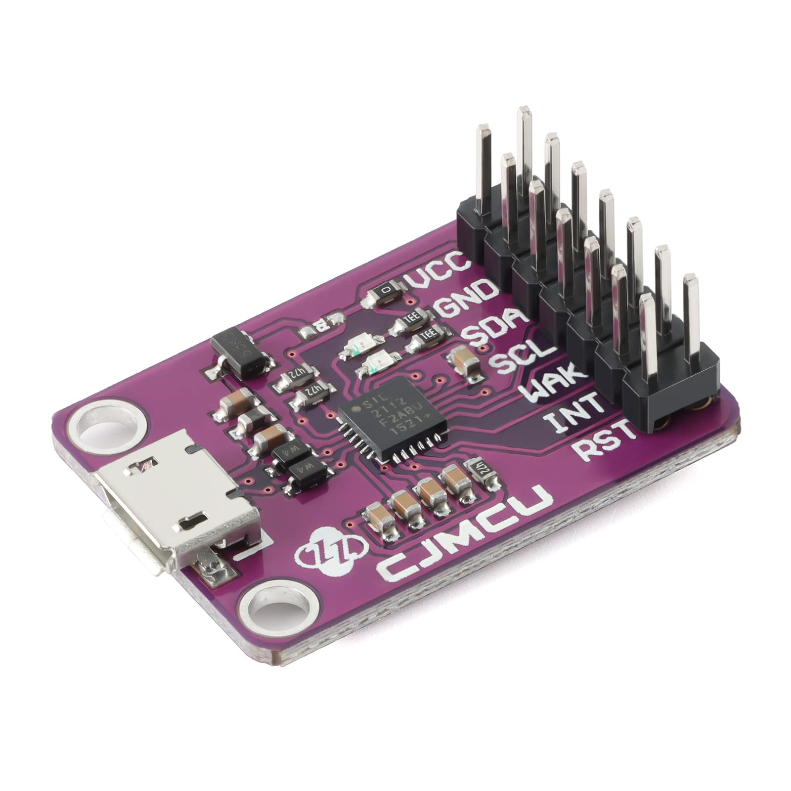

cp2112
i2c
usb
Index
The CP2112 USB-to-I2C Bridge is a device from Silicon Labs designed to facilitate communication between a USB host (like a PC) and I2C devices

-l
#
unknown CP2112 SMBus Bridge on hidraw5 N/A
connect i2c sensor at address 0x18
i2cdetect -y -r 16
[ sudo] password for user:
0 1 2 3 4 5 6 7 8 9 a b c d e f
00 : -- -- -- -- -- -- -- --
10 : -- -- -- -- -- -- -- -- 18 -- -- -- -- -- -- --
20 : -- -- -- -- -- -- -- -- -- -- -- -- -- -- -- --
30 : -- -- -- -- -- -- -- -- -- -- -- -- -- -- -- --
40 : -- -- -- -- -- -- -- -- -- -- -- -- -- -- -- --
50 : -- -- -- -- -- -- -- -- -- -- -- -- -- -- -- --
60 : -- -- -- -- -- -- -- -- -- -- -- -- -- -- -- --
70 : -- -- -- -- -- -- -- --
udev rule
Add udev rule to add permission rw for all
/dev/i2c-16
#
1 root i2c 89 , 16 Nov 1 07 :10 /dev/i2c-16
info -a -p $( udevadm info -q path -n /dev/i2c-16)
#
looking at device '/devices/pci0000:00/0000:00:14.0/usb3/3-4/3-4.2/3-4.2.4/3-4.2.4:1.0/0003:10C4:EA90.0011/i2c-16/i2c-dev/i2c-16' :
KERNEL == "i2c-16"
SUBSYSTEM == "i2c-dev"
DRIVER == ""
ATTR{ name}== "CP2112 SMBus Bridge on hidraw5"
ATTR{ power/async}== "disabled"
ATTR{ power/control}== "auto"
ATTR{ power/runtime_active_kids}== "0"
ATTR{ power/runtime_active_time}== "0"
ATTR{ power/runtime_enabled}== "disabled"
ATTR{ power/runtime_status}== "unsupported"
ATTR{ power/runtime_suspended_time}== "0"
ATTR{ power/runtime_usage}== "0"
udev rule echo 'SUBSYSTEMS=="i2c-dev", ATTRS{name}=="CP2112 SMBus Bridge on hidraw5", MODE="0666"' | sudo tee /etc/udev/rules.d/90-i2c-usb.rules
check rule udevadm control --reload
# plug out/ in
# check device permission
/dev/i2c-16
1 root i2c 89 , 16 Nov 1 08 :05 /dev/i2c-16
#know we can run i2cdetect without sudo
-y -r 16